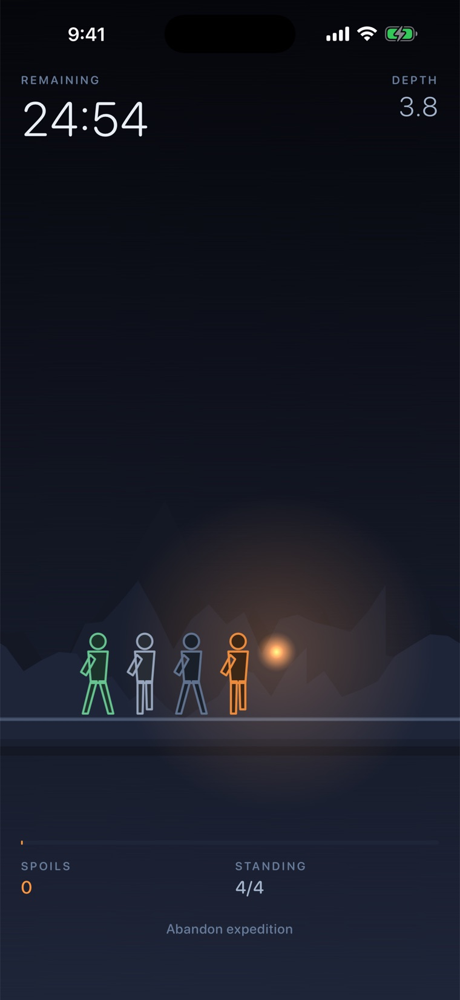
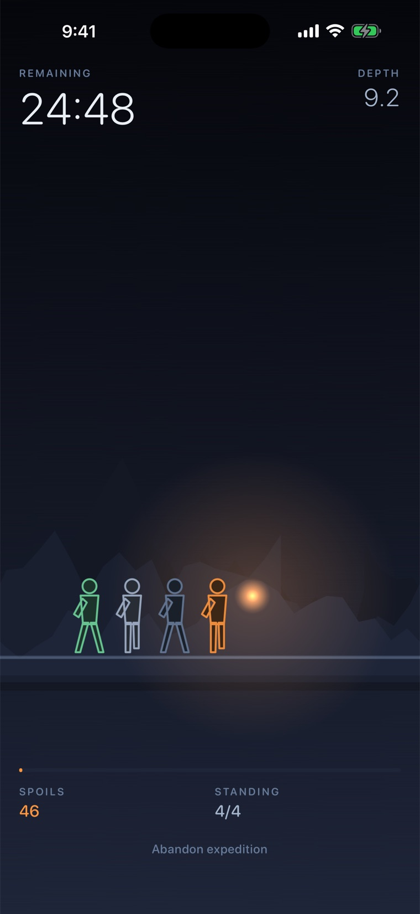

집중 타이머 · 공부 타이머
집중하는 동안에만, 원정대는 전진합니다.
세션을 시작하면 등불 하나에 의지한 원정대가 어둠 속으로 출발합니다. 원정대는 당신이 폰을 멀리하는 시간만큼만 걷습니다. 앱을 나가면 그 자리에 멈추고, 15초 넘게 돌아오지 않으면 길을 잃습니다.

누를 것이 없습니다
세션 중에는 폰을 만질 일이 없습니다.
세션 중에는 버튼도, 선택지도, 조작도 없습니다. 애초에 그게 목적이니까요. 화면은 책상 건너편에서 1초 만에 읽히도록 만들었습니다. 켜 두고 공부에만 몰입하세요. 원정대가 걸은 시간이 곧 당신의 순공시간입니다.

규칙
앱을 나가면 원정대가 멈춥니다.
15분, 25분, 45분, 60분 중 하나를 고르고 출발하세요. 25분이면 뽀모도로 한 번입니다. 다른 앱으로 넘어가는 순간 행군은 그 자리에서 멈춥니다. 15초 안에 돌아오면 다시 걷고, 그보다 오래 자리를 비우면 이번 원정은 실패합니다. 그래도 전리품의 40%는 건집니다.
잉걸과 원정대
살아남은 전리품은 잉걸이 됩니다.
세션을 끝까지 버틴 전리품은 잉걸로 바뀝니다. 잉걸로 등불잡이·정찰병·방패병·탐색가를 새로 모집하고, 이미 있는 대원은 승급시킵니다. 원정대가 강해질수록 앉아서 집중할 때마다 더 멀리 나아갑니다.
있는 것과 없는 것
잠금은 이탈이 아닙니다
화면을 끄고 엎어 두는 게 가장 좋습니다. 행군은 계속됩니다.
오프라인에서 작동
앱에 네트워크 코드가 아예 없습니다.
가입할 것 없음
계정도, 동기화도, 프로필도 없습니다.
살 것 없음
광고도, 인앱 결제도 없습니다.
죽는 것 없음
원정대는 전멸하지 않습니다. 오래 집중해서 손해 보는 일은 없습니다.
자주 묻는 질문
궁금한 것들, 짧게 답합니다.
- 앱을 나가면 어떻게 되나요?
- 나가는 순간 원정대가 멈춥니다. 15초 안에 돌아오면 다시 걷습니다. 그보다 오래 비우면 이번 원정은 실패하고, 들고 있던 전리품의 40%만 회수됩니다.
- 폰을 잠그면 원정이 끝나나요?
- 아니요. 잠금은 집중으로 칩니다. 화면을 끄고 엎어 두는 게 가장 좋습니다. 행군은 계속됩니다.
- 무료인가요?
- 네. 광고도, 인앱 결제도, 계정도 없습니다.
- Forest 같은 앱과 뭐가 다른가요?
- 아무것도 죽지 않습니다. 실패한 원정도 전리품의 40%를 남기고, 집중한 시간은 언제나 그대로 인정됩니다. 완전히 오프라인에서 작동합니다.
- 오프라인에서도 되나요?
- 네. 앱에 네트워크 코드가 아예 없습니다. 어떤 데이터도 폰 밖으로 나가지 않습니다.
- 잉걸이 뭔가요?
- 원정에서 살아남은 전리품이 잉걸이 됩니다. 잉걸로 원정대를 모집하고 승급시키며, 강한 원정대일수록 더 멀리 걷습니다.
- 세션 길이는 어떻게 되나요?
- 15분, 25분, 45분, 60분 중에 고릅니다. 25분이면 뽀모도로 한 번입니다.
원정은 실패할 수 있어도, 집중한 시간은 사라지지 않습니다.